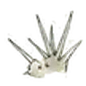

1 · La espinaEsto también es El Quisco.
El mar en las rocas, las aves de quebrada y la brisa. El Quisco no termina en la playa.
Proyecto académico de Agencia C.C.C. · Duoc UC

1 · La espinaEl mar en las rocas, las aves de quebrada y la brisa. El Quisco no termina en la playa.
Proyecto académico de Agencia C.C.C. · Duoc UC